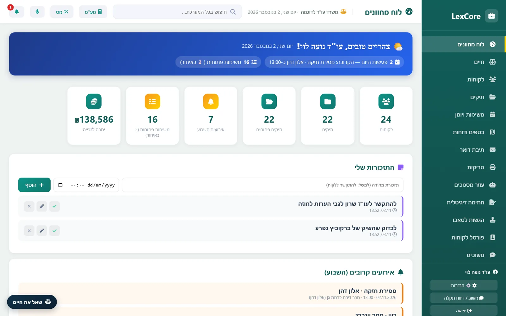
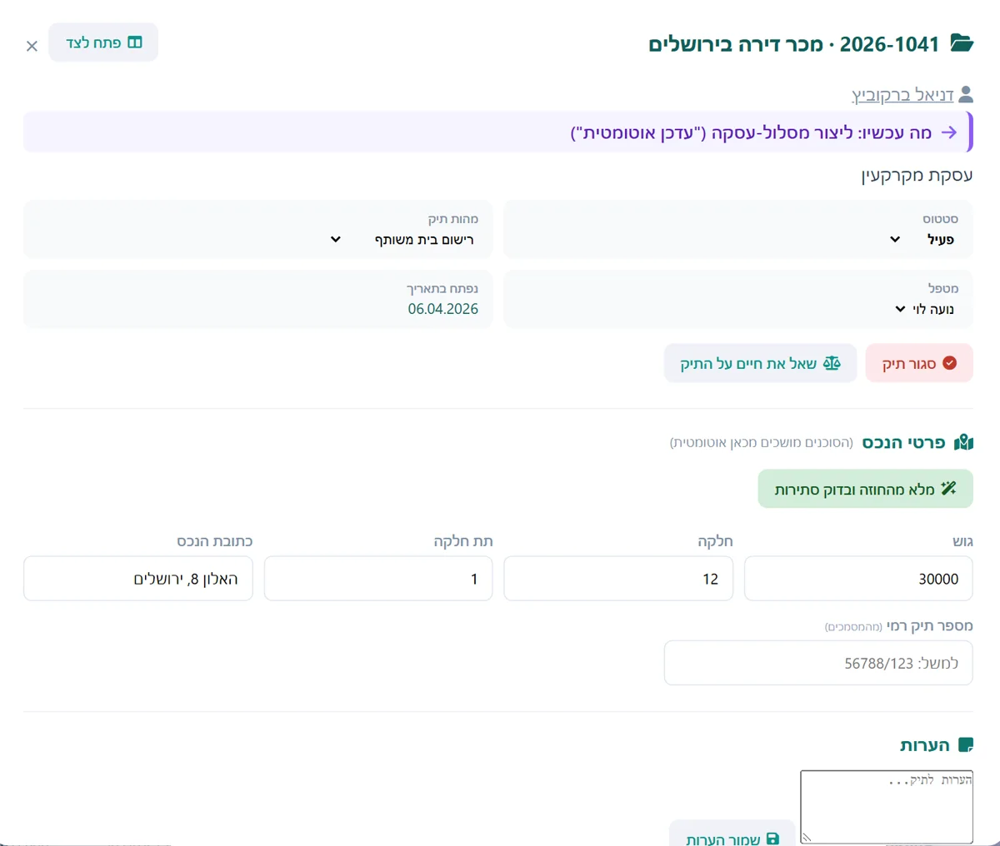
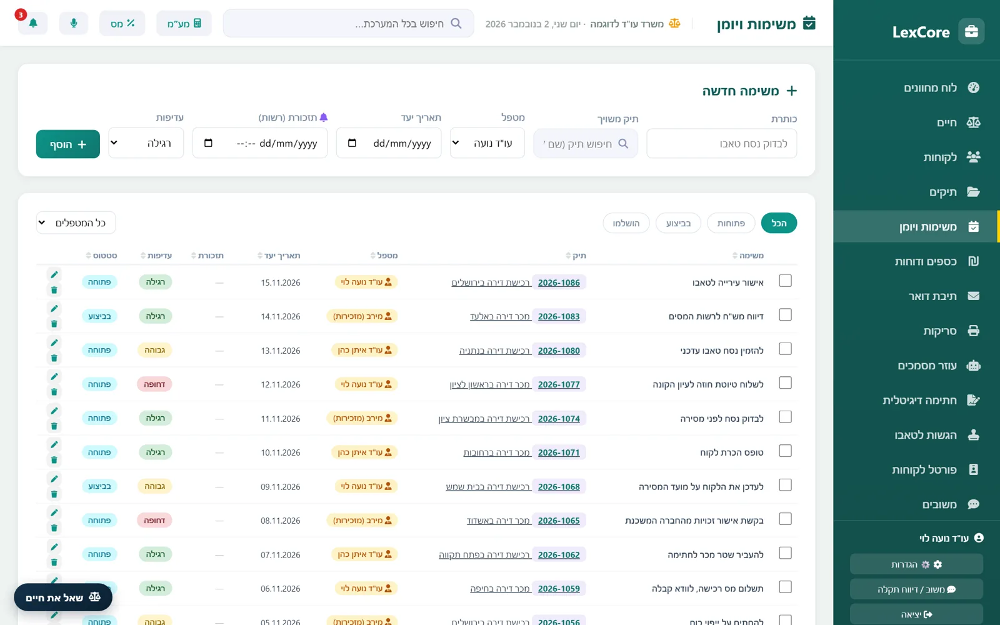
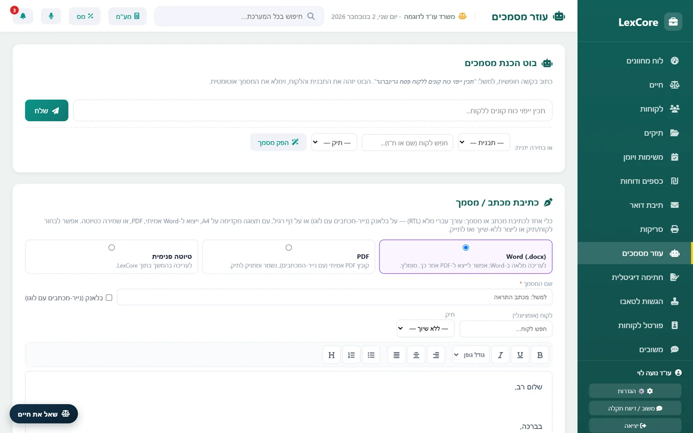
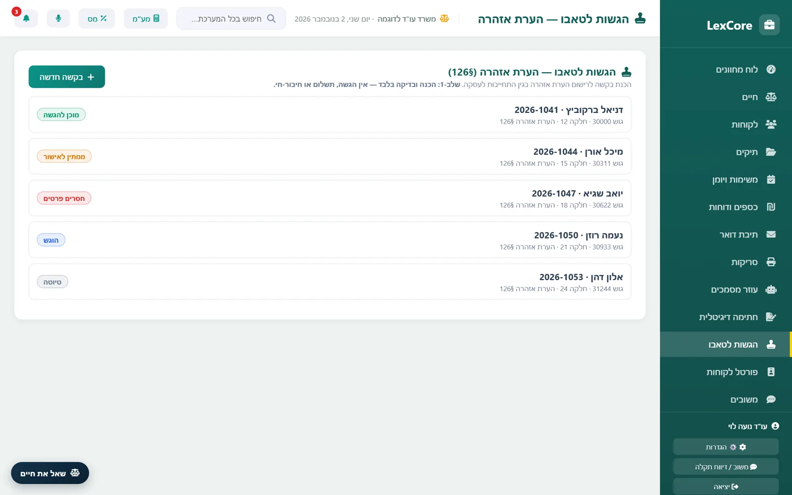
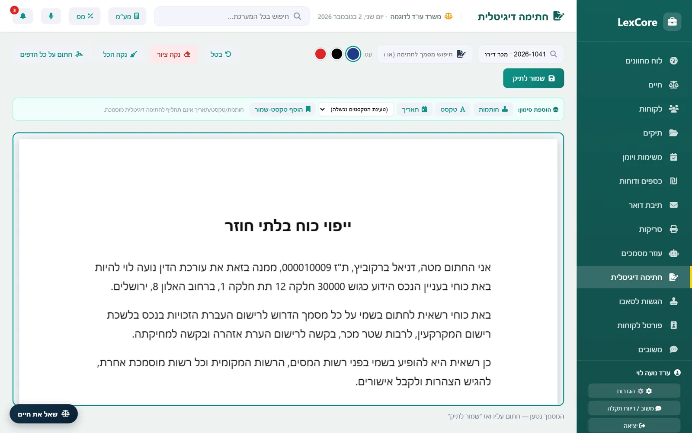
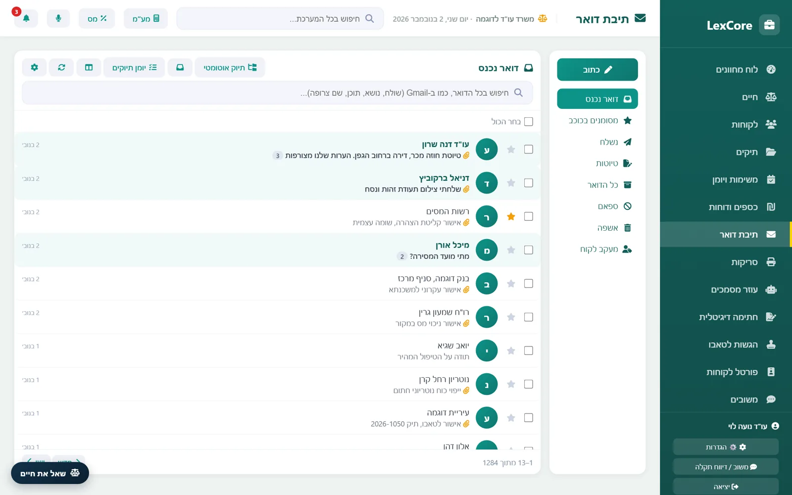
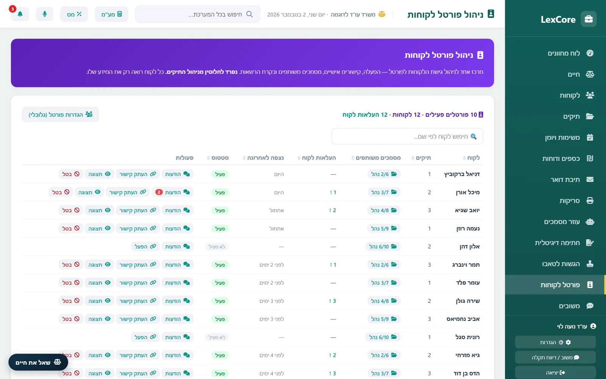
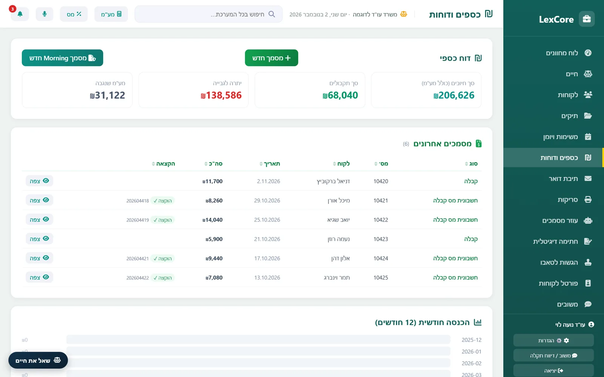
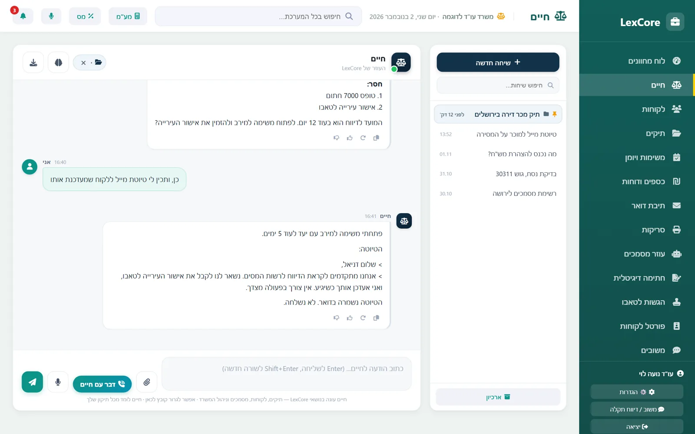

מדריך
איך עושים את הדברים השכיחים. כתוב לגרסה 1.23, ואפשר לקרוא לפי הצורך.
התחלה
נכנסים עם הקוד האישי, ממחשב שאושר. בכניסה ראשונה ממחשב חדש מופיע קוד מחשב: שולחים אותו למנהל, והוא מאשר אותו בהגדרות.
הסרגל מימין מוביל לכל המסכים. בחלק העליון יש חיפוש, מחשבון מע"מ, מחשבון מס, דיבור עם חיים ופעמון ההתראות.


לקוח ותיק
- במסך לקוחות לוחצים "לקוח חדש" וממלאים שם, ת"ז וטלפון.
- מכרטיס הלקוח פותחים תיק ובוחרים מהות ומטפל.
- בפרטי הנכס ממלאים גוש, חלקה, תת-חלקה וכתובת.
- מוסיפים צדדים (מוכר, קונה) עם ת"ז וטלפון.
אפשר גם לשלוח ללקוח חדש טופס קליטה, ולקבל את הפרטים ממנו.


מועדים ומשימות
מעלים לתיק את החוזה (Word או PDF עם טקסט) ולוחצים על חילוץ. המערכת מציעה תאריכים ומועדים, ואתם מאשרים מה נכנס ליומן.
משימה נפתחת ממסך המשימות, מתיק או ממייל. תזכורת אישית מוסיפים בלוח המחוונים, והיא מגיעה גם למייל.
שימו לב: חוזה סרוק צריך לעבור זיהוי טקסט קודם, ומועד מחושב תמיד דורש בדיקה של עורך דין.


מסמכים
- בעוזר המסמכים בוחרים תבנית ולקוח או תיק.
- השאלון מציג מה חסר. משלימים.
- בודקים את הטיוטה ומפיקים ל-Word או PDF, על הבלאנק של המשרד אם רוצים.
תבנית חדשה מעלים כקובץ Word עם שדות בסוגריים כפולים, למשל {{שם}} או {{גוש}}.


נסח, טאבו ומיסוי
הכפתורים נמצאים בתיק, באזור המסמכים. "הזמן נסח טאבו" שולח בקשה לסוכן במחשב המשרד; כשמגיעים לתשלום, הוא עוצר ומודיע. הנסח שחוזר מתויק בתיק.
לטופס 7000 פותחים את ההצהרה המקוונת באתר רשות המסים, ובתוסף Chrome בוחרים תיק ולוחצים למילוי. בודקים כל שדה לפני ההגשה.


חתימות
במסך חתימה דיגיטלית בוחרים תיק ומסמך, חותמים ושומרים לתיק.
לחתימה מרחוק: בתיק לוחצים על שליחה לחתימה ובוחרים חותמים. כל חותם מקבל קישור וקוד למייל. המסמך החתום חוזר לתיק, ואפשר לשלוח תזכורת למי שלא חתם.
חתימה בכרטיס חכם דורשת את העוזר המקומי במחשב, ואת הכרטיס בקורא.


דואר
מחברים חשבון Gmail בעזרת סיסמת אפליקציה, בהגדרות הדואר. המסך עובד כמו Gmail, ויש בו גם תיוק: לוחצים על "תייק", המערכת מציעה תיק, ומה שלא ברור נשאר לבדיקה ידנית.
הודעה שנמחקת עוברת לאשפה, וההודעה הקופצת מאפשרת לבטל.


פורטל ללקוח
במסך פורטל לקוחות מפעילים פורטל ללקוח ומעתיקים את הקישור. בתיק מסמנים אילו מסמכים הלקוח רואה. הלקוח נכנס עם קוד למייל שמופיע בתיק, ולכן חשוב שהמייל יהיה נכון.


כספים
בתיק מוסיפים חיובים ותקבולים, והיתרה מתעדכנת. מסך כספים ודוחות מרכז את היתרות וההכנסה החודשית. קבלות וחשבוניות מופקות דרך Morning, אחרי שמחברים מפתח בהגדרות.


חיים
הכפתור "שאל את חיים" נמצא בכל מסך. אפשר לכתוב, לדבר או לצרף קובץ. כדאי לקשר את השיחה לתיק, ואז לא צריך להסביר על מה מדובר.
לפני שליחת מייל חיים מבקש אישור מפורש. אם הוא טעה, סמנו זאת והוסיפו הערה: הוא שומר אותה ללפעם הבאה, ובמסך "מה חיים למד" אפשר לראות ולמחוק.
חיים יכול לטעות, כמו כל מודל שפה. בדקו כל מה שיוצא החוצה.


צוות והרשאות
מנהל מוסיף משתמשים, קובע תפקיד ומשבית משתמש שעזב, בהגדרות. שם גם רשימת המחשבים המורשים. כל משתמש יכול להחליף את הקוד שלו.
משהו לא ברור? כתבו לנו.